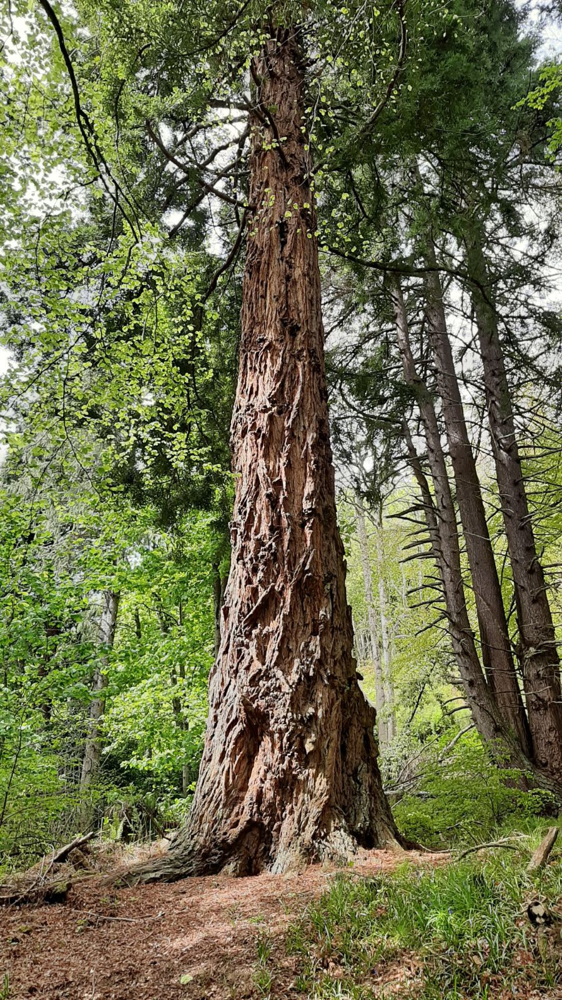

All about redwoods
July 4th, 2024
Nestled along the foggy coastline of California and Oregon1, the Coastal Redwoods stand as silent sentinels of time. These majestic trees, known scientifically as Sequoia sempervirens, are not just the tallest living beings on Earth but also embody a profound connection to our planet’s ancient past.
A Glimpse into History
The story of the Coastal Redwoods begins millions of years ago when these giants thrived across the Northern Hemisphere. Today, they are found in a narrow strip along the Pacific coast, where the climate nurtures their immense growth. With heights soaring to over 350 feet (107 meters) and diameters reaching up to 22 feet (7 meters), these trees are unparalleled in their grandeur.
Lifeline of the Forest
Coastal Redwoods are not merely tall—they are resilient and vital ecosystems in themselves. Their thick, fibrous bark resists fire, pests, and even fungal infections, allowing them to live for centuries. Some of these ancient trees are estimated to be over 2,000 years old, making them among the oldest living organisms on the planet.

A coastal redwood tree in all of its glory.
Environmental Guardians
Beyond their sheer size and age, Coastal Redwoods play a crucial role in the ecosystem. Their canopy provides shade and moisture, creating a unique microclimate that supports diverse plant and animal life. Endangered species such as the Northern Spotted Owl and the Marbled Murrelet find refuge in these towering forests, highlighting the critical importance of preserving their habitat.
Conservation Challenges
Despite their resilience, Coastal Redwoods face significant challenges from human activities, including logging and climate change. Efforts by conservation organizations and national parks aim to protect these ancient forests for future generations. Redwood National and State Parks in California provide sanctuary to a significant portion of these trees, offering visitors a chance to marvel at their beauty and understand their ecological importance.
A Call to Preserve
The legacy of the Coastal Redwoods is a reminder of our responsibility to safeguard Earth’s natural wonders. Through sustainable practices and conservation efforts, we can ensure that these giants continue to thrive for centuries to come. Their survival is not just a testament to their own resilience but also to the resilience of our planet as a whole.
Conclusion
Standing in the presence of a Coastal Redwood, one cannot help but feel humbled by its stature and awed by its endurance. These trees are not just icons of natural beauty but living symbols of resilience and interconnectedness. As we navigate an increasingly uncertain future, let us draw inspiration from these ancient guardians of the Pacific Coast, and strive to protect and preserve them as a testament to our commitment to the planet.
In the quiet majesty of a Coastal Redwood grove, one finds a profound connection to nature’s enduring spirit—a connection that reminds us of the importance of conservation and the awe-inspiring wonders that await those who seek to understand and protect our world.
-
Though Coastal Redwoods can be found in Japan and the UK, this represents their native range. ↩